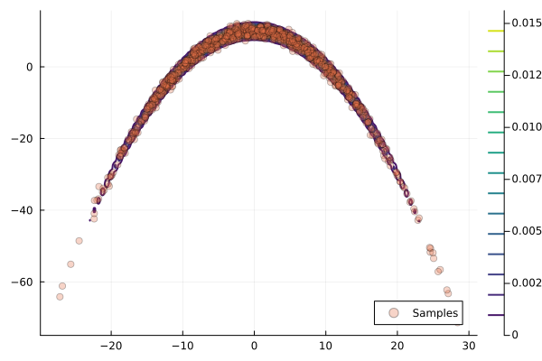
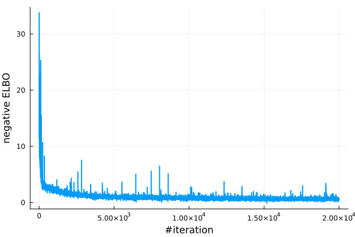
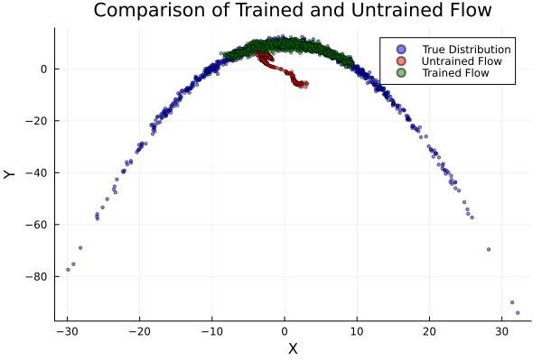

Planar Flow on a 2D Banana Distribution
This example demonstrates learning a synthetic 2D banana distribution with a planar normalizing flow [RM2015] by maximizing the Evidence Lower BOund (ELBO).
The two required ingredients are:
- A log-density function
logpfor the target distribution. - A parametrised invertible transformation (the planar flow) applied to a simple base distribution.
Target Distribution
The banana target used here is defined in example/targets/banana.jl (see source for details):
using Random, Distributions
Random.seed!(123)
target = Banana(2, 1.0, 10.0) # (dimension, nonlinearity, scale)
logp = Base.Fix1(logpdf, target)You can visualise its contour and samples (figure shipped as banana.png).

Planar Flow
A planar flow of length N applies a sequence of planar layers to a base distribution q₀:
\[T_{n,\theta_n}(x) = x + u_n \tanh(w_n^T x + b_n), \qquad n = 1,\ldots,N.\]
Parameters θₙ = (uₙ, wₙ, bₙ) are learned. Bijectors.jl provides PlanarLayer.
using Bijectors
using Functors # for @leaf
function create_planar_flow(n_layers::Int, q₀)
d = length(q₀)
Ls = [PlanarLayer(d) for _ in 1:n_layers]
ts = reduce(∘, Ls) # alternatively: FunctionChains.fchain(Ls)
return transformed(q₀, ts)
end
@leaf MvNormal # prevent updating base distribution parameters
q₀ = MvNormal(zeros(2), ones(2))
flow = create_planar_flow(10, q₀)
flow_untrained = deepcopy(flow) # keep copy for comparisonIf you build many layers (e.g. > ~30) you may reduce compilation time by using FunctionChains.jl:
# uncomment the following lines to use FunctionChains
# using FunctionChains
# ts = fchain([PlanarLayer(d) for _ in 1:n_layers])See this comment for how the compilation time might be a concern.
Training the Flow
We maximize the ELBO (here using the minibatch estimator elbo_batch) with the generic train_flow interface.
using NormalizingFlows
using ADTypes, Optimisers
using Mooncake
sample_per_iter = 32
adtype = ADTypes.AutoMooncake(; config=Mooncake.Config()) # try AutoZygote() / AutoForwardDiff() / etc.
# optional: callback function to track the batch size per iteration and the AD backend used
cb(iter, opt_stats, re, θ) = (sample_per_iter=sample_per_iter, ad=adtype)
# optional: defined stopping criteria when the gradient norm is less than 1e-3
checkconv(iter, stat, re, θ, st) = stat.gradient_norm < 1e-3
flow_trained, stats, _ = train_flow(
elbo_batch,
flow,
logp,
sample_per_iter;
max_iters = 20_000,
optimiser = Optimisers.Adam(1e-2),
ADbackend = adtype,
callback = cb,
hasconverged = checkconv,
show_progress = false,
)
losses = map(x -> x.loss, stats)Plot the losses (negative ELBO):
using Plots
plot(losses; xlabel = "iteration", ylabel = "negative ELBO", label = "", lw = 2)
Evaluating the Trained Flow
The trained flow is a Bijectors.TransformedDistribution, so we can call rand to draw iid samples and call logpdf to evaluate the log-density function of the flow. See documentation of Bijectors.jl for details.
n_samples = 1_000
samples_trained = rand(flow_trained, n_samples)
samples_untrained = rand(flow_untrained, n_samples)
samples_true = rand(target, n_samples)Simple visual comparison:
using Plots
scatter(samples_true[1, :], samples_true[2, :]; label="Target", ms=2, alpha=0.5)
scatter!(samples_untrained[1, :], samples_untrained[2, :]; label="Untrained", ms=2, alpha=0.5)
scatter!(samples_trained[1, :], samples_trained[2, :]; label="Trained", ms=2, alpha=0.5)
plot!(title = "Planar Flow: Before vs After Training", xlabel = "x₁", ylabel = "x₂", legend = :topleft)
Notes
- Use
elboinstead ofelbo_batchfor a single-sample estimator. - Switch AD backends by changing
adtype(seeADTypes.jl). - Marking the base distribution with
@leafprevents its parameters from being updated during training.
Reference
- RM2015Rezende, D. & Mohamed, S. (2015). Variational Inference with Normalizing Flows. ICML.